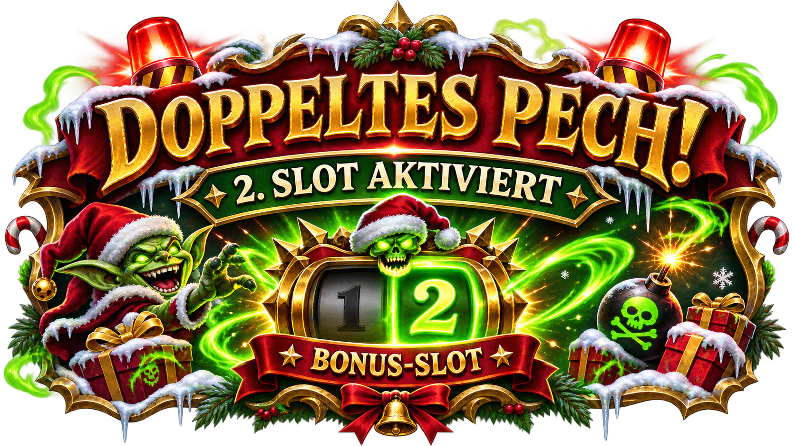

🎄 Mission 2 · Designvorschau
Zurück zum Weihnachts-Event🎰 Grinch Chaos Slots
40 Gemeinheiten · 10 % Chance auf Slot 2 · nach jeder Kartenphase

40 GEMEINHEITEN
🎁 Drei zusätzliche Attrappen auf den Walzen
10GratisloseAttrappe · nie gewinnbar
50GratisloseAttrappe · nie gewinnbar
100GratisloseAttrappe · nie gewinnbar
Während der ersten beiden Walzenrotationen laufen die drei Lockpreise sichtbar mit. Sie können niemals stehen bleiben. Die rechte Bonuswalze bleibt weiß, bis nach dem ersten Ergebnis mit 10 % Wahrscheinlichkeit ein zweiter Slot ausgelöst wird.
😈 Lass den Grinch drehen!
Dies ist eine frei spielbare, rein optische Vorschau. Sie verändert keine DOG-Partie, gibt keine Lose aus und schaltet keine Mission frei.
Bereit für Grinchs Streich
Nach dem Drehen erscheint eine von 40 echten Grinch-Gemeinheiten.

🎰 Rechte Bonuswalze
Diese Gemeinheit wurde erst nach dem Stoppen der ersten beiden Walzen ausgelost.
Wichtig: Die Gratislose-Felder 10, 50 und 100 sind ausdrücklich nicht gewinnbar. Sie können weder durch Slot 1 noch durch Slot 2 gezogen werden. Alle anderen Ergebnisse in dieser Vorschau sind Effekte, keine Geld- oder Losgewinne.